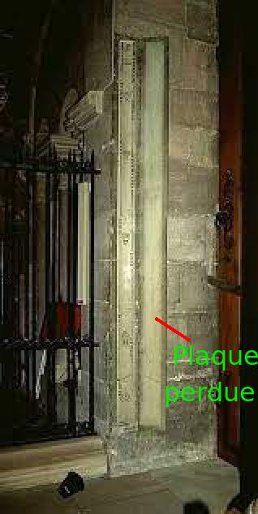

L'horloge appartient à l'État, ce que reconnaît d'ailleurs la fabrique de la cathédrale de Strasbourg.
Certains habitués et passionnés de l'horloge astronomique viennent à la première heure le 1er janvier pour voir si l'horloge astronomique a bien fonctionné, calculé la nouvelle année, les fêtes mobiles et surtout la date de Pâques. Et quand toutes les indications sont bonnes, ils sont émerveillés. Mais ce qu'ils ne savent pas, c'est que très souvent cela se passe mal, la date de Pâques n'est pas à la bonne place, et d'autres indications peuvent avoir été mal déterminées lors du changement d'années. Le premier à venir à l'horloge, avant l'ouverture aux touristes, c'est celui qui entretient l'horloge et il veille le 1er janvier à corriger toutes les indications erronées du calendrier, afin que tous les touristes et amateurs soient satisfaits. Voilà la vérité sur le changement d'année !
En raison de l'absence de véritable supervision scientifique de l'horloge, tant au niveau de l'entretien ordinaire que de la conservation, certains éléments de l'horloge ainsi que des informations historiques ont irrémédiablement disparu. Par exemple, lors de la restauration de la méridienne en 2001, l'ancien volet de tôle (décorée) qui la recouvrait a été perdu. Il a probablement été emporté par le restaurateur Jean Kraft, puis mis à la ferraille après son décès en 2003. Le restaurateur n'avait aucun besoin de l'emporter avec lui, et la DRAC aurait dû veiller à ce qu'il soit conservé dans l'horloge. Le volet aurait dû être restitué dès 2002, voire avant.
|  | |
| (source : Association Dasypodius) | |
Lorsque j'ai contacté la DRAC, elle ne s'est pas montrée préoccupée, et elle ne s'est pas empressée de me communiquer le rapport de restauration de la méridienne ou les coordonnées de M. Kraft (je ne savais pas encore que M. Kraft était décédé). Pourtant, la DRAC prétend « suscite(r) et sout(enir) toute action de connaissance et de diffusion du patrimoine régional par le biais de recherches, colloques, publications, expositions... » (copie d'écran ici), ce qui n'est visiblement pas le cas dans les faits. La fabrique elle-même, n'a visiblement pas été impliquée dans cette restauration.
{kind=link}
Plus grave, il manque actuellement (2022) deux panneaux d'inscriptions qui se trouvaient à côté de l'horloge et qui avaient été réalisés par Schwilgué. Ces panneaux n'ont pas pu être retrouvés dans la cathédrale et ont probablement été emportés par un employé de la cathédrale, il y a 20 ans ou plus. Ces panneaux n'ont pas été retrouvés au Musée des arts décoratifs où ils auraient pu se trouver (2021). On aimerait d'ailleurs aussi savoir si les rapports de l'intervention de fin 2018 les évoquent, mais comme la DRAC refuse de communiquer ces rapports, nous n'en savons pas plus.
Il y a bien d'autres exemples, qui montrent l'urgence d'une vraie supervision scientifique, et pas uniquement d'une supervision de façade par la DRAC ou la fabrique de la cathédrale. Ainsi, l'intendant de la cathédrale, Patrick Fuchs, a déjà fait sortir en 2011 de l'horloge une échelle de Schwilgué sous prétexte qu'elle était abîmée, et cette échelle n'a sans doute pas été remise dans l'horloge dans l'état, car elle était trop grande pour sortir en un morceau. La fabrique (et notamment son archiprêtre M. Wackenheim) n'a jamais accédé à mes demandes sur l'état des échelles de l'horloge, et ce n'est peut-être que dans 50 ans que l'on saura ce qui reste dans l'horloge, puisque la fabrique interdit l'accès à l'horloge et que la DRAC (qui ne connaît pas spécialement l'horloge) bloque l'accès aux archives des restaurations. En tous cas, concernant cette échelle, la fabrique a elle-même pris des décisions patrimoniales, sans consulter le comité scientifique de l'horloge, et pensant que certains objets situés dans l'horloge étaient de l'outillage en libre service. C'est comme cela que le patrimoine se dégrade. La fabrique ne doit pas être considérée comme une structure apte à gérer le patrimoine scientifique. C'est d'ailleurs la fabrique qui a demandé à la fin des années 1850 à ce que l'horloge astronomique soit transférée hors de la cathédrale ! (voir par exemple Vincent Creutz, La paroisse de la cathédrale de Strasbourg de 1807 à 1870, 2006, p. 158 et Strasbourg, la grâce d'une cathédrale, 2007, p. 92) C'était avant qu'elle n'ait eu l'idée de faire payer les entrées au spectacle de midi.
On pourrait aussi citer les éléments perdus de certaines horloges classées lors de la « supervision » de leur restauration par la DRAC, ou encore la suggestion par la personne qui était chargée de l'entretien de l'horloge que des éléments de l'horloge de Dasypodius soient sortis de l'horloge astronomique. (Des précisions peuvent être données, car ce ne sont aucunement des affirmations gratuites et certaines ont fait l'objet de mentions dans les réunions du comité scientifique de l'horloge astronomique.)
Et bien sûr, il y a tout l'historique de l'entretien de l'horloge astronomique qui est perdu pour toujours.
Plusieurs légendes alimentent l'horloge astronomique, comme celle où l'on aurait crevé les yeux du constructeur pour l'empêcher de construire une horloge similaire ailleurs. Celui-ci aurait alors cassé un mécanisme qui permettait aux lions de rugir. Mais ce ne sont que des légendes.
Par contre, il y a eu de vrais cas récents de sabotages sur l'horloge astronomique. (Détails à venir)
En 2001-2003, j'ai réalisé quelques modélisations 3D partielles de l'horloge astronomique, par exemple du planétaire, des rouages de la précession et du comput. Ces modélisations n'ont pas été rendues publiques, car inachevées. Pour une modélisation plus récente, voir celle que j'ai faite pour Notre-Dame de Paris.
Jusqu'au milieu des années 1980, la supervision de l'horloge astronomique était uniquement assurée par l'entreprise Ungerer et notamment par son ingénieur Henri Bach (1909-1991). Ensuite, jusqu'en 2006, il n'y a eu aucune véritable supervision scientifique, pas même de la fabrique et seul le remontage et un entretien minimal étaient assurés. Lorsqu'en 2001 j'ai signalé des erreurs à la personne chargée de l'entretien, j'ai tout simplement été pris de haut. Et la fabrique a été assez réticente à améliorer la situation. En fait, elle savait très bien qu'il y avait des problèmes, mais je pense qu'elle ne savait pas si ces problèmes étaient internes à l'horloge ou s'ils étaient dus à un entretien défectueux, et par ailleurs elle ne voulait certainement pas que ces problèmes soient ébruités.
Malgré cela, l'actuel comité a été créé en 2006 en conséquence de mes contacts au début des années 2000 avec la paroisse de la cathédrale. Les premiers membres de ce comité ont été Jean-Pierre Rieb, moi-même et plusieurs membres de la fabrique. Peu après, le comité a été rejoint par Alfred Faullimmel, qui assurait l'entretien de l'horloge jusqu'en 2001. En 2012, j'ai démissionné de ce comité, parce que j'estimais que la fabrique ne soutenait pas suffisamment la recherche scientifique, et même la bloquait. (Notons qu'il y a un historique interne de ce comité réalisé par la fabrique, mais qui falsifie quelque peu l'histoire, la fabrique tentant auprès de ses membres de me rejeter les torts.) Il n'était plus possible d'exercer une supervision scientifique digne de ce nom. Après 2012, d'autres membres ont rejoint le comité, mais la recherche y est quasiment inexistante et ne semble pas se faire de manière très scientifique. Le comité n'a d'ailleurs pas de direction scientifique.
Par la suite, je donnerai précisément la composition du comité, depuis le début, et son évolution au cours du temps. Toutes ces informations sont publiques.
- Il y a un rapport de restauration de l'atelier Jeannette, que la DRAC a finalement fourni à la fabrique, à la demande du comité, mais avec des réticences. Ces réticences sont évidemment inadmissibles, puisque ce rapport est public. Par ailleurs, en fournissant les rapports de restauration des années après les travaux, il devient très difficile d'évaluer ces travaux, les intervenants étant souvent partis, quelquefois morts, les dossiers sont difficiles à retrouver et le sujet n'intéresse plus les conservateurs qui pensent que les interventions sont achevées.
Divers travaux ont eu lieu au cours de la période 2013-2019, notamment au niveau de la façade extérieure du transept sud. Les cadrans solaires de Dasypodius ainsi que le cadran extérieur de l'horloge astronomique ont été restaurés. En 2018, le buffet de l'horloge astronomique a été restauré (voir ici le règlement de consultation (copie locale) et l'invitation pour la presse à la fin des travaux, copie locale ici).
Ces travaux ont été réalisés sans collaboration étroite avec les chercheurs, pas même avec le comité scientifique de l'horloge astronomique. Les besoins des chercheurs n'ont jamais été pris en compte et on n'a pas profité de l'échafaudage pour documenter par exemple le coq automate. On pourra évidemment le faire dans 50 ans... Il y a apparemment eu une seule réunion « scientifique » le 28 juin 2016, mais qui a réuni des personnes qui n'étaient pour la plupart pas du tout expertes dans l'étude et la documentation des horloges astronomiques et mécanismes complexes, à savoir Sabine Bengel, Pierre-Yves Caillault, Marie-Hélène Caissutti, Patrick Fuchs, Irène Jourd'heuil, Louis Panel, Carole Pezzoli, Simon Piéchaud, Marie-Pierre Siffert, Laurence Reibel, Jean-Pierre Rieb. Étaient apparemment aussi invités mais n'ont pu venir Agnès Bos, Benoît Léothaud, Marie-Agnès Sonrier et Jonathan Truillet. (Je transcrirai ultérieurement le compte-rendu de cette réunion, qui est un document administratif public.)
Parmi ces personnes, une seule (M. Rieb) connaissait bien l'horloge astronomique et aucune des autres n'était particulièrement formée dans le domaine de l'horlogerie, encore moins dans la documentation de mécanismes complexes. Même Mme Reibel, conservatrice du patrimoine et conservatrice du musée du temps, n'est pas technicienne et n'a aucune publication scientifique ou astronomique à son actif.
Pourtant, la DRAC a indiqué que « (l)es travaux sur le buffet sont menés sous la direction de Louis-Napoléon Panel, conservateur à la Conservation régionale des monuments historiques de la DRAC Grand Est et supervisés par un comité scientifique composé de conservateurs, universitaires, scientifiques, ainsi que l'architecte des bâtiments de France - conservateur de la cathédrale (UDAP 67) et l'architecte en chef (ACMH) ». (copie locale)
À ma connaissance, il n'y a pas eu d'autre réunion de ce type que celle-la, si bien que l'on peut sérieusement douter d'une réelle supervision scientifique...
En somme, un comité semble avoir été constitué sans que la plupart des besoins intrinsèques (autres que la conservation purement matérielle) de l'horloge astronomique (ou de la communauté scientifique) aient pu être pris en compte. L'intervention qui était présentée comme une opportunité à saisir en raison des travaux sur les vitraux, aurait elle-même dû conduire à faire tout ce qu'il était possible de faire à ce moment-là au niveau de la mécanique et qui ne pourrait plus être fait avant longtemps. Et ces interventions ne pouvaient être laissées à la discrétion de restaurateurs qui ne sont pas des chercheurs ni des experts en horlogerie astronomique.
À ce jour, malgré de nombreuses demandes, la DRAC a refusé de communiquer les rapports de restauration de ces différentes interventions, alors que les chercheurs, et même le public en général, ont le droit d'avoir un accès complet à ces données, rapports, photographies, etc., qui ne doivent pas simplement être réservés à des conservateurs.
Les reportages, articles ou conférences sur l'horloge astronomique comportent souvent des erreurs, souvent pour les mêmes raisons d'ailleurs. En voici quelques exemples récents :
- Le reportage Les secrets des cathédrales : Notre-Dame de Strasbourg, la prodigieuse paru dans Le Point du 14 avril 2017, est accompagné d'une vidéo en ligne, dans laquelle Carole Pezzoli, conservatrice régionale aux Monuments historiques à la DRAC affirme par exemple que l'horloge astronomique de Schwilgué (décédé en 1856) date de 1870 ! Voici l'extrait en question. Bien sûr, c'est aussi la faute du Point, mais pas seulement du Point.
- Je passe sur toutes les erreurs de traduction autour de l'horloge, on se demande quelquefois où les gens ont appris l'anglais, s'ils connaissent quelqu'un dans leur entourage parlant anglais, ou s'ils ont simplement utilisé un traducteur automatique. En fait, c'est exactement ce qu'a fait la DRAC Grand Est, lorsqu'elle évoque le chantier du buffet de l'horloge astronomique fin 2018, elle écrit en français « Le chantier de l'horloge astronomique de la cathédrale de Strasbourg en images » mais en anglais « The construction of the astronomical clock of Strasbourg Cathedral in pictures », ce qui n'est pas tout-à-fait la même chose. La page anglaise précise bien qu'elle a été traduite par Reverso (copies d'écran ici et ici au cas où les originaux disparaissent) Est-ce que la DRAC ne pouvait pas trouver quelqu'un pour relire les traductions ?
- Le communiqué de presse de la DRAC (original ici) sur les travaux sur le buffet de l'horloge astronomique fin 2018 est aussi assez édifiant. Il est suffisamment truffé d'erreurs pour que je laisse le lecteur les découvrir. J'en révélerai peut-être certaines dans le futur.
- Autres exemples à venir !
{kind=link}
{kind=link}
Outre le fait de ne pas répondre aux demandes de communication d'archives, la DRAC Grand Est a entrepris plusieurs démarches pour mettre fin à ces demandes :
- Elle a envoyé des lettres à mon employeur, afin de m'intimider, alors qu'elle savait parfaitement que mes demandes étaient établies comme chercheur indépendant. (preuves sur demande)
- Elle a aussi tenté de rallier la paroisse de la cathédrale pour une action conjointe à mon encontre. (preuves sur demande)
Le but général de ces démarches est de contrôler la recherche et d'empêcher toute critique, fût-elle constructive.
Il y a eu trois films réalisés en collaboration avec la fabrique de la cathédrale de Strasbourg :
- Un premier film a été réalisé par la société « La Goélette » (Saint Ouen) vers 1990, et c'est la même qui édite l'une des brochures en vente à la cathédrale. Ce film était jadis en vente à la cathédrale.
- Un second film a été réalisé par l'archiprêtre Bernard Eckert, avec un texte de Charles Singer, et a été projeté à côté de l'horloge astronomique entre 2007 et 2017. Ce film n'a jamais été en vente. Il serait souhaitable que ce film soit récupéré et rendu librement accessible dans des archives, voire sur youtube. Il est certainement en possession de la fabrique, et évidemment de M. Eckert.
- Le film actuel a été réalisé par l'entreprise InventiveStudio en 2016-2017 et projeté à partir de 2017. Il est aussi en vente dans le magasin de la cathédrale. Ce film s'appuie sur une modélisation 3D partielle de l'horloge. Néanmoins, cette modélisation est incomplète et souvent approximative, même s'il est difficile de le voir sur le film. Cette modélisation a été réalisée en six mois et s'appuie probablement sur un scan 3D. Le modèle 3D surfacique n'est pas accessible et la fabrique de la cathédrale qui a commandé le film (40000 euros) ne le possède pas.
Voir ce que j'ai dit plus haut concernant les pertes patrimoniales.
À l'intérieur de la cathédrale se trouve une échelle mobile en bois Gugumus. Le lien avec l'horloge astronomique n'est peut-être pas évident, mais les Gugumus étaient d'anciens employés de l'entreprise Schwilgué-Ungerer. En mai 2018 ou peu avant, la fabrique de la cathédrale a placé devant cette échelle un petit panneau, qui donne quelques éléments biographiques sur les frères Gugumus, en faisant croire que ces informations proviennent de la fabrique. En réalité, ce sont des informations que la fabrique a récupérées de Wikipédia, où je les avais mises, suite à mes recherches sur les Gugumus. Ce panneau a été modifié suite à mes réclamations, la fabrique ayant voulu cacher son « copier-coller » maladroit (la version initiale copiait les appels de note, sans mettre les notes...). Voici les trois principales versions de ce panneau : à gauche, la version initiale où les appels de note sont encore présents (ce qui donne par exemple la date ridicule du 15 mai 18383 !), au milieu la version corrigée après que j'ai signalé le plagiat au chancelier de l'archevêché (Bernard Xibaut), et à droite la version actuelle. La version du milieu laisse encore croire que les informations viennent de la fabrique, alors que la personne chargée des relations publiques a simplement copié Wikipédia sans le dire, et comme si elle n'avait de comptes à rendre à personne.
 |
 |
{kind=link}
Voici pour mémoire à quoi ressemblait la page Wikipedia pour Gugumus en mai 2018, ce que chacun peut d'ailleurs vérifier :
Autre bêtise de la personne qui a fait la première version du panneau, la date de décès de Louis Gugumus qui était indiquée en 1902, avec un appel de note 5, est devenue 19025 et visiblement cette personne n'a rien trouvé de mieux à faire que de remplacer 19025 par 1925 ! Étonnant, non ?
Par ailleurs, il n'est pas très difficile de trouver quand ces données ont été mises pour la première fois en ligne et par qui.
En d'autres termes, la personne qui a préparé le panneau a fait un copier-coller, sans même lire et comprendre le texte et sans chercher à attribuer correctement les sources. C'est quand même intelligent, non ? Encore aujourd'hui (2022), la fabrique refuse de reconnaître son erreur et l'origine des informations.
La fabrique ne respecte donc pas vraiment les sources, et le fait que l'État Civil du 19e siècle est accessible à tous ne signifie pas pour autant que l'on ne doive pas dire d'où viennent les informations. Il y a une différence entre une information que la fabrique aurait obtenue par elle-même, et une information qui résulte du travail de quelqu'un. En l'occurrence, c'est moi qui ai fait les recherches dans l'État-Civil en 2013, pas la fabrique. Au minimum, la fabrique aurait dû citer Wikipédia.
En 2019, les membres du comité scientifique de l'horloge astronomique ont rassemblé des informations sur l'horloge, guidés par l'archiprêtre (M. Wackenheim) et le chancelier de l'archevêché (B. Xibaut), et ces informations ont été rédigées en langue vulgaire par Sylvie de Mathuisieulx, un auteur jeunesse.
On remarquera que ce guide évite soigneusement de donner les origines exactes du comité (je ne suis même pas mentionné), mais il se méprend aussi sur les objectifs qui étaient ceux du comité. Il ne s'agissait pas simplement de superviser l'entretien, les réparations et le réglage, mais de créer une dynamique scientifique autour de l'horloge, et notamment de développer la recherche. C'est la recherche scientifique qui a mené à la création du comité, et le comité devait servir à faire avancer la connaissance sur l'horloge. Cela ne semble plus être compris...
- pièces, magnets, montres, etc. en vente à la cathédrale
Je cite ici quelques conférences récentes auxquelles j'ai assisté, ou dont le contenu m'est précisément connu :
- Conférences de Pierre Juillot (1947?-2022) sur les équations solaires et lunaires dans l'horloge astronomique (10 février et 13 mars 2018, cathédrale, salle Saint-Michel)
- Conférence d'Édouard Mehl (né en 1970) : ce que montre l'horloge astronomique (19 mars 2018, Palais universitaire, salle Pasteur)
- Conférence de Suzanne Braun (née en 1959) sur les décors de l'horloge astronomique (21 mars 2018, Musée d'Art Moderne et Contemporain)
- Conférence de Louis Panel (né en 1979) sur le buffet de l'horloge astronomique (16 mai 2018, Münsterhof)
- ...
Je ferai par la suite quelques commentaires sur ces conférences.
L'exposition « Time is Tomi » a eu lieu à Besançon en 2020 et était consacrée aux liens entre l'artiste Tomi Ungerer et l'horlogerie. À cette occasion, le Musée du temps de Besançon a été en contact avec plusieurs personnes à Strasbourg, dans les musées et ailleurs, mais avec seulement deux personnes directement associées à l'horloge astronomique : l'intendant de la cathédrale Gérald Valette et Alfred Faullimmel, chargé de l'entretien de l'horloge jusqu'en 2001. Aussi étonnant que cela puisse paraître, le Musée du temps n'a apparemment pas été en contact avec le restant du comité. Je n'ai pas non plus été contacté, bien que je sois cité dans le catalogue pour plusieurs travaux de recherche non publiés (et donc non citables sans autorisation). C'est assez curieux et pas très professionnel.
Le musée des arts décoratifs de la ville de Strasbourg et le musée de l'Œuvre Notre-Dame ont engagé en 2021 un marché de restauration de statuettes de la seconde horloge astronomique, ainsi que de grisailles de Stimmer. On peut obtenir des musées de Strasbourg le DCE, le CCTP et peut-être d'autres informations. Ce marché fait suite à des marchés antérieurs contractés avec les restaurateurs François et Francine Péquignot. Les musées de Strasbourg bloquent actuellement l'accès des chercheurs (en particulier moi) aux statuettes, sous prétexte justement qu'elles vont être restaurées.

Ce modèle est depuis novembre 2021 en possession de la fabrique de la cathédrale de Strasbourg. Il n'est pas exposé.
{kind=link}
Pour annoncer cette redécouverte la fabrique attend peut-être
- qu'une documentation soit rédigée sur ce mécanisme ?
- qu'il soit restauré ?
- qu'il soit exposé (au Musée des arts décoratifs ?) ?
- que le reportage de Stéphane Bern soit diffusé ?
- autre chose?
En tous cas, le meilleur endroit pour son exposition est le Musée des arts décoratifs et ce mécanisme doit être accessible aux chercheurs (pas simplement sous vitrine).
L'équipe de Stéphane Bern prépare actuellement (avril 2022) un reportage sur l'horloge astronomique de la cathédrale de Strasbourg, et notamment sur son comput.
La Fondation de l'Œuvre Notre-Dame prévoit de remettre en fonction l'horloge Schwilgué-Ungerer de la plate-forme de la cathédrale, remontant en grande partie aux années 1840 (en dépit de la plaque quelque peu trompeuse qui date l'horloge de 1921). Il est à souhaiter que les préconisations que j'avais énoncées dans l'article du Bulletin de la cathédrale de Strasbourg de 2016 seront prises en compte. Elles n'avaient pas été prises en compte lors du réaménagement de la plate-forme en 2019 et la Fondation (et ville de Strasbourg) bloque mon accès à l'horloge de la plate-forme depuis 2013.